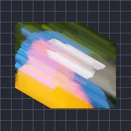

Estelas lineales

Crea estelas rectas deslizando copias de la capa a lo largo de un ángulo y fusionándolas donde se solapan. Con Fusión en Desactivada, la capa se queda tal cual. Con Copias en Cada píxel, se coloca una copia en cada píxel de Longitud en lugar de 48 repartidas a lo largo de ella.
Ajustes
| Ajuste | Tipo | Rango | Predeterminado |
|---|---|---|---|
| Ángulo | Ángulo | -3600° a 3600° | 0° |
| Longitud | Número | 0 a 4000 | 100 |
| Alfa | Número | 0% a 100% | 100% |
| Sesgo | Número | -100% a 100% | 0% |
| Fusión | Opción | Aclarar, Media, Oscurecer, Desactivada | Aclarar |
| Copias | Opción | Espaciadas, Cada píxel | Espaciadas |